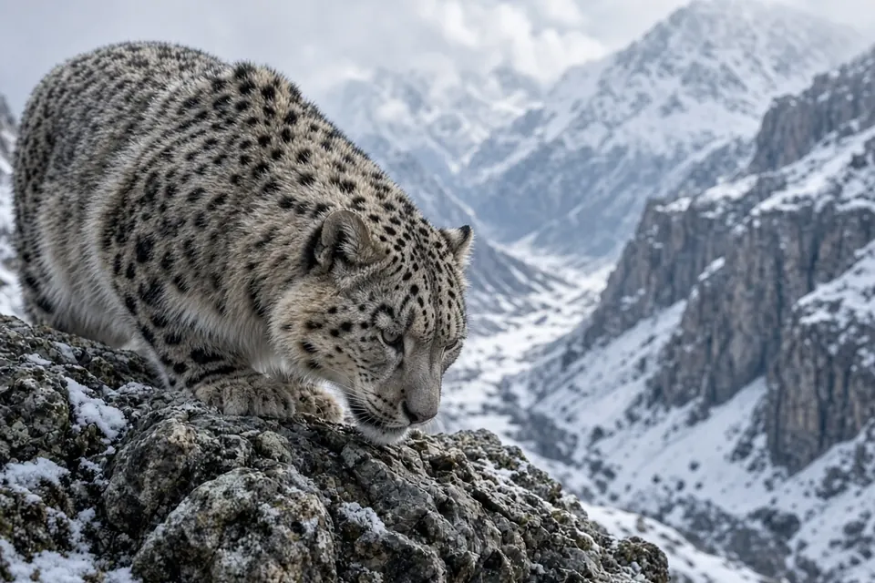

Home › Blog › What do snow leopards eat?
What do snow leopards eat? Mostly wild goats and sheep heavier than themselves
Snow leopards mainly eat wild mountain goats and sheep. A review of 25 diet studies covering 1,696 scats from across the species' range found that their main prey are Siberian ibex, blue sheep (bharal), Himalayan tahr, argali and marmots, and that they significantly prefer Siberian ibex and blue sheep weighing about 55 kg, which is heavier than the cat itself. Domestic livestock is also eaten: in one DNA study in Mongolia it turned up in about one in five droppings.
The short answer
A snow leopard weighs roughly 30 to 50 kg, according to the IUCN SSC Cat Specialist Group, yet its preferred prey weighs more than that. It is a specialist hunter of the large hoofed animals that live on steep mountain slopes, and it tops up its diet with smaller animals and, where herders graze their animals, with livestock.
| Prey | What it is | How important |
|---|---|---|
| Siberian ibex | A wild mountain goat of Central Asia | Main prey and significantly preferred |
| Blue sheep (bharal) | A wild sheep of the Himalayas and Tibetan Plateau | Main prey and significantly preferred |
| Himalayan tahr | A wild goat of the southern Himalayas | Main prey where it occurs |
| Argali | The largest wild sheep | Main prey in parts of the range |
| Marmots | Large ground squirrels | Main small prey |
| Domestic goats, sheep and other livestock | Herders' animals grazing in snow leopard habitat | Regular, and a source of conflict |
Main prey and preferences are from Lyngdoh et al. (2014). See the sources list below.
The range wide review: 1,696 scats
Salvador Lyngdoh and colleagues, including the prey preference specialist Matt Hayward, pulled together 14 published and 11 unpublished snow leopard diet studies and published the analysis in PLoS ONE in 2014. Between them the studies had analysed 1,696 snow leopard scats (droppings) from across the cat's range. For each prey species the team worked out both how often it appeared and how much meat it supplied, using a standard correction factor that converts the remains found in scats into the weight of prey actually eaten.
Three findings stand out. First, the snow leopard has a narrow, specialised diet: a measure of dietary breadth called Levin's index showed it relies on a small number of prey species. Second, the significantly preferred prey weighed 55 ± 5 kg, and the preferred weight range was 36 to 76 kg. Third, the diet differs from region to region. The team identified four distinct zones across the range, each with its own mix of mountain landscape and prey, which is why the authors stress that conservation plans need to protect the right prey in the right place.

A DNA study in Mongolia
Identifying prey from hair and bone in droppings is tricky, and so is being sure a dropping came from a snow leopard and not a fox or a wolf. To get around this, Wasim Shehzad and colleagues used DNA. Working in the Tost Mountains in the South Gobi of Mongolia, they extracted DNA from 81 snow leopard droppings, sequenced a short stretch of a mitochondrial gene, and matched it to prey species. Their results were published in PLoS ONE in 2012.
They found five different prey items in total:
- Siberian ibex in 70.4% of droppings
- Domestic goat in 17.3%
- Argali in 8.6%
- Large hoofed animals in 98.8% of droppings overall: wild ones in 79% and domestic livestock in 19.7%
These figures are frequency of occurrence, the share of droppings that contained each prey, not the share of meat eaten. Even so, they show how heavily this population depends on ibex, and that livestock is a real but smaller part of the diet.
Why such big prey?
Large wild goats and sheep are the most abundant big animals in the cold, rocky places where snow leopards live, so it makes sense for the cat to specialise on them. Snow leopards usually stalk from above and use the steep terrain to close the distance before a short charge, a style suited to animals that live on cliffs. You can read more about the cat's build in our snow leopard facts.
It is interesting to compare this with the leopard, a different species despite the shared name. A separate review by Hayward and colleagues of 33 leopard diet studies found that leopards prefer prey of about 10 to 40 kg, with a most preferred mass of about 25 kg. The snow leopard, although it is often lighter than a big male leopard, targets prey roughly twice that size. We cover leopard feeding in why do leopards drag their kills into trees?
Do snow leopards eat livestock?
Yes, and it matters for their survival. The IUCN SSC Cat Specialist Group notes that livestock commonly makes up about 15 to 30 percent of the snow leopard's diet, and sometimes far more where wild prey is scarce. The Mongolian DNA study fits that picture, with livestock in 19.7% of droppings. Losses to snow leopards can lead herders to kill the cats in retaliation, which is one of the main threats to the species. That is why many conservation projects focus on predator proof corrals and on keeping wild ibex and blue sheep populations healthy, so the cats have less reason to turn to goats and sheep. Our big cat conservation page explains the wider picture.
Key takeaways
- Snow leopards are diet specialists that mainly hunt wild mountain goats and sheep.
- Their main prey are Siberian ibex, blue sheep, Himalayan tahr, argali and marmots.
- Preferred prey weighs about 55 kg, within a preferred range of 36 to 76 kg, which is heavier than the cat.
- In a DNA study in Mongolia, ibex appeared in 70.4% of droppings and livestock in 19.7%.
- Protecting wild prey helps reduce livestock losses and retaliatory killing.
Frequently asked questions
What do snow leopards eat?
Mainly wild mountain goats and sheep. A review of 25 diet studies found their main prey are Siberian ibex, blue sheep, Himalayan tahr, argali and marmots, with a significant preference for Siberian ibex and blue sheep.
What is a snow leopard's favourite prey?
Siberian ibex and blue sheep (bharal). The 2014 range wide review found snow leopards significantly prefer these two species, and prefer prey weighing about 55 kg.
Can a snow leopard kill prey bigger than itself?
Yes. Snow leopards weigh roughly 30 to 50 kg, but their preferred prey weighs 36 to 76 kg, so they regularly take animals heavier than themselves.
Do snow leopards eat livestock?
Yes. In a DNA study of 81 snow leopard droppings in Mongolia, domestic livestock appeared in 19.7% of them, and the IUCN Cat Specialist Group says livestock commonly makes up 15 to 30 percent of the diet.
Cite this page
APA: BigCatWise. (2026, October 13). What do snow leopards eat?. https://bigcatwise.com/blog/what-do-snow-leopards-eat.html
MLA: "What do snow leopards eat?." BigCatWise, 13 Oct. 2026, bigcatwise.com/blog/what-do-snow-leopards-eat.html.
Chicago: BigCatWise. "What do snow leopards eat?." Last modified October 13, 2026. https://bigcatwise.com/blog/what-do-snow-leopards-eat.html.
Please check the date you accessed the page and adjust to your teacher's or journal's style guide.
Sources
- Lyngdoh, Shrotriya, Goyal, Clements, Hayward and Habib (2014) Prey preferences of the snow leopard (Panthera uncia): regional diet specificity holds global significance for conservation, PLoS ONE 9(2): e88349. DOI 10.1371/journal.pone.0088349
- Shehzad, McCarthy, Pompanon, Purevjav, Coissac, Riaz and Taberlet (2012) Prey preference of snow leopard (Panthera uncia) in South Gobi, Mongolia, PLoS ONE 7(2): e32104. DOI 10.1371/journal.pone.0032104
- Hayward, Henschel, O'Brien, Hofmeyr, Balme and Kerley (2006) Prey preferences of the leopard (Panthera pardus), Journal of Zoology 270(2): 298-313. DOI 10.1111/j.1469-7998.2006.00139.x
- IUCN SSC Cat Specialist Group: Snow leopard
Figures are rounded summaries of the sources above. Wild populations are hard to count, so estimates change as new surveys are published.